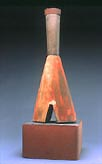
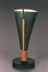
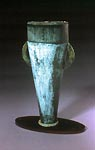
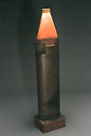

| Lynn Duryea
American ceramist.

American
ceramist Lynn Duryea is known for her minimalist sculpture, incorporating
references to architectural, mechanical and industrial elements.
Duryea had already been a studio-artist in Maine for over 20 years
before earning an MFA from the University of Florida in 2002. In
1986 she co-founded the Watershed
Center for the Ceramic Arts in Newcastle, Maine, where she
was Program Coordinator and Artist-in-Residence for the Watershed
Workshop for People with HIV/AIDS from 1992–2004.
She taught at the Sam Houston State University in Texas in 2003
and accepted a tenured position as Assistant Professor of Art, Appalachian
State University in Boone, North Carolina in 2004.

Duryea was also a co-founder of the Sawyer Street Studios, an artist-owned
ceramic facility in South Portland, Maine. In 1998 she received
Portland, Maine’s YWCA Women of Achievement Award, the first
visual artist to do so.
Artist's Statement
The ordinary is quite extraordinary. Through elemental shape and
form, my reference is to architectural and mechanical elements as
well as large scale industrial objects and sites. The representation
of function is in an allusive and enigmatic sense, suggestive of
the past. The objects are evocative of abandoned sites of human
activity, generating feelings of melancholy and stillness.
When viewed from a distance, these objects present insistent profile
and reductive form, images of simplicity and stillness. Closer consideration
reveals a sense of history, traces of transformation that generate
narratives of accretion and deterioration. Surfaces are generated
by means of building up and wearing away, a layering and removal
of materials that implies processes occurring over time, suggesting
previous use and depicting the effects of decay, erosion and weathering.
Through a vocabulary of form of softened geometry, I investigate
subtlety and nuance, and the method and manner of connection. Simplicity
and clarity function as an expression, and as an invitation to contemplate
the complexity and richness that can exist in the apparently straightforward.
Subtle shifts and changes, seeing images from slightly differing
angles and views, lends a depth to the consideration of objects.
Transition zones, borders, places where one reality shifts to another,
are compelling in their quiet drama. Great energy exists along an
edge. I grew up in a small town on the extreme end of Long Island,
New York, knowing the feeling of a littoral, a place where land
stopped and seemingly endless water began. Land and the landscape
have been encountered in visceral as well as visual ways. The nature
and essence of the feelings generated by a particular place are
as inspiring to me as the structure and color of land, buildings
and vegetation.
Joy in the physicality of constructing is part of what compels me
to create objects. I am interested in how structure as well as the
methods of construction and assembly can become part of the visual
language of an object. More than serving a compositional function,
for me these elements become part of a record of making, connections
in time as well as material.
More Artists of the Week
More Articles
|
{kind=link}
{kind=link}
{kind=link}
{kind=link}